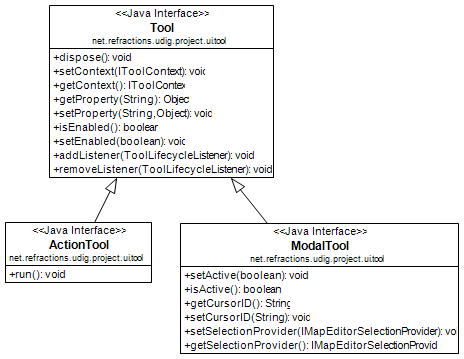
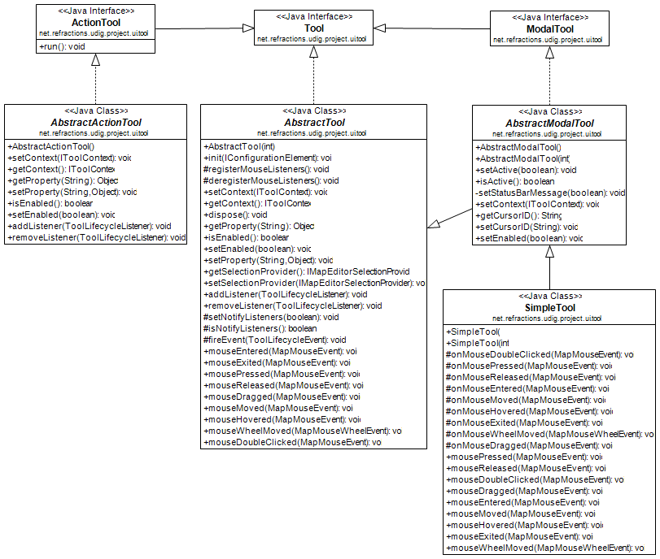

Tools must extend the net.refractions.udig.project.ui.tool extension point. The reference section provides a list of the extension points and technical documentation for the extension points.
Tools are used to capture user interaction with the Map Editor. Tools have access to a range of information (via a ToolContext) and can issue commands to update the editor.

A background tool is always active in the background watching what the user is doing. When used in this fashion a tool would be limited to providing user feedback.
Example:
Extension Point Example:
<extension point="net.refractions.udig.project.ui.tool"> <backgroundTool name="%cursorPosition.name" class="net.refractions.udig.tools.internal.CursorPosition" id="net.refractions.udig.tools.backgroundTool1"> </backgroundTool> ... </extension>
A single fire tool that has a run command that is executed when the tool is activated. An action tool does not change the mouse cursor because it is not modal. If a tool is needed that fires when clicked within the editor, a modal tool would be a better choice.
Example:
Extension Point example:
<extension point="net.refractions.udig.project.ui.tool"> <extension point="net.refractions.udig.project.ui.tool"> <actionTool categoryId="net.refractions.udig.tool.category.render" class="net.refractions.udig.tools.internal.RefreshTool" commandIds="net.refractions.udig.tools.refreshCommand" icon="icons/etool16/refresh_co.gif" id="net.refractions.udig.tools.refresh" menuPath="file/refresh" name="%refresh.name" onToolbar="true" tooltip="%refresh.tooltip"> </actionTool> ... </extension>
A tool that has both on and off mode. Within UDIG there can only be one active modal tool. A modal tool does not have a run method, instead is expected to listen to mouse events. The event methods that are currently available are provided in the AbstractTool class with empty implementations. When active, the cursor defined in extension definition is used as the mouse cursor.
Example:
Extension point example:
<extension point="net.refractions.udig.project.ui.tool"> <modalTool categoryId="net.refractions.udig.tool.category.zoom" class="net.refractions.udig.tools.internal.Zoom" cursor="crosshair" icon="icons/etool16/zoom_mode.gif" id="net.refractions.udig.tools.Zoom" name="%zoom.tool.name" onToolbar="true" toolCursorId="zoomCursor" tooltip="%zoom.tool.tooltip"> </modalTool> ... </extension>
A Category represents a collection of tools that are always available but are logically similar and are as a result grouped together.
Each category can have a key assigned to it which has two functions:
Tool extenders can also register a list of commands with the framework via the extension point definition. If this is done the Tool extender must also create a IHandler object (part of the eclipse command framework). An instance of the handler will be created for each command and each time a command occurs it will be passed to the handler to be handled.
Extension point example:
<extension point="net.refractions.udig.project.ui.tool"> <category commandId="net.refractions.udig.tools.infoCommand" id="net.refractions.udig.tool.category.info" name="%info.tools.name"/> ... </extension>
We will check for an ActionSet with the same name as the ToolCategory - you can use this facility to turn off actions that don't make sense for your perspective.
Cursors can be defined independently from tools; allowing you to reuse the same cursor for several tools.
Extension example:
<extension point="net.refractions.udig.project.ui.tool"> <toolCursor hotspotX="10" hotspotY="10" id="arrowCursor" image="icons/pointers/edit_source.gif"/> ... </extension>
Where:
Once the tool cursor is defined as an extension it is accessible as a default tool cursor by toolCursorId attribute of a modal tool element. For this to work the ID must be unqiue – allowing a cursor defined in one plug-in to used by the tool from another plug-in just by ID.
The ToolManager is responsible for adding tools to the menu bar and tool bar. To add tool buttons to custom views the ToolManager.createToolAction(ToolID, CategoryID) method will create an Action that can be added to the view.
All Tools are provided with a ToolContext object by the framework. The tools can use the context to access the model and to create and send commands which modify the model. Contexts have a large number of methods to simplify the job of tool authors. Please let us know of methods that would be useful or should be part of the context objects.
IMPORTANT: It is critical that the tools do not make a new reference to the context object because it is set each time the editor is activated and may change without notification.
There are several abstract classes available for you to extend.

There are several available subclasses to start you out:
Note when using AbstractTool you can use the constructor to define what sort of events you are interested in, the events come in already expressed in Map coordinates.
class ExampleTool AbstractTool(){
ExampleTool(){
super( MOUSE | WHEEL );
}
public void mouseReleased( MapMouseEvent e ) {
...
}
public void mouseWheelMoved( MapMouseWheelEvent e ) {
...
}
}
Tools go through a fixed lifecycle:
Tool activation is a life cycle step reserved for ModalTools; when active a modal tool will control what the Map Editor is doing - the tools cursor will be displayed, its selection will be treated as the MapEditor selection as far as the work bench is concerned.
ModalTool.boolean isActive() ModalTool.setActive( boolean ) ModalTool.getCursorID() ModalTool.setCursorID( String ) ModalTool.getSelectionProvider() ModalTool.setSelectionProvider(IMapEditorSelectionProvider)
Only one modal tool can be active. There is no other opportunity to activate another disabled tool through UI contributions. When the tool is disabled, its UI contributions are disabled.
When the active tool is being disabled, its functionality is blocked but the tool is still active. The tool can be enabled by changing of context again. In that case only user manually can switch to any other enabled tool through UI contributions.
The tool interface has two methods to track isEnabled:
Tool.setEnabled(Boolean)
Tool.isEnabled()
This lets to enable/disable a tools functionality at any time during tool life cycle. When the tool is disabled, the cursor for the MapEditor is changed initialized and the functionality is blocked by unregistering mouse listeners.
There are several ways to perform tool enablement. First way is to let the system performs enablement on the base of current context (selecting different layers, etc.). The second wayis to manually calling Tool.setEnabled(Boolean) from any place of tool implementation to simply block its functionality.
I started tool lifecycle listeners: the initial three events are:
Tool lifecycle listeners are not used anywhere at the current moment, but it would be good to have such functionality to listen tools lifecycle events without overriding of Tool class methods.
Cursor is a disposable object and to implement lazy loading the proxy object is used in the same manner as ToolProxy object before:
net.refractions.udig.project.ui.internal.tool.display.CursorProxy
ToolManager is responsible to create full list of cursor proxies and cache them by ID from extension point. Whenever the actual org.eclipse.swt.graphics.Cursor object is needed you must call the following method:
Cursor IToolManager.findToolCursor(String cursorID);
In most cases the developer does not need the org.eclipse.swt.graphics.Cursor object while working with tools implementation. The Tools API is extended by the next methods to manage tool cursors:
ModalTool.setCursorID(String cursorID) String ModalTool.getCursorID()
These methods are responsible for the cursors management. The set method performs actual updating of mouse cursor image if it is needed.
Systems cursors are listed using constants in SWT class. Constants are integer numbers. While current Tool Cursors Framework uses string IDs it is recommended to work with mapped constants from ModalTool interface. These constants are mapped to system cursors. If the system cursor SWT.CURSOR_WAIT is needed then call routine:
ModalTool.setCursorID(ModalTool.WAIT_CURSOR);
In this case the framework recognizes that the system cursor is requested and sets it for the tool. You can combine as custom cursors as system using the underlying mechanism transparently.
The developer can declaratively add cursor images through extension mechanism and use them by ID from any place in source code. If the SWT object is needed call:
IToolManager.findToolCursor(String cursorID).
If you just want to set cursor for the tool just call
ModalTool.setCursorID(String cursorID).
Updating of mouse cursor image is performed automatically by the framework depending on the current context, active tool, etc.
It is possible to support compatibility with cursor extension point under tool extension point as a default cursor for the tool.
Currently all tools are active but in the future would be desirable to have a tool configuration extension point where udig extenders can define which tools are activated for their application. A system like the eclipse command framework for Eclipse 3.1 is likely.
This work has been started already by making use of ActionSets and Tool Categories.
(c) Copyright (c) 2004-2008 Refractions Research Inc. and others.